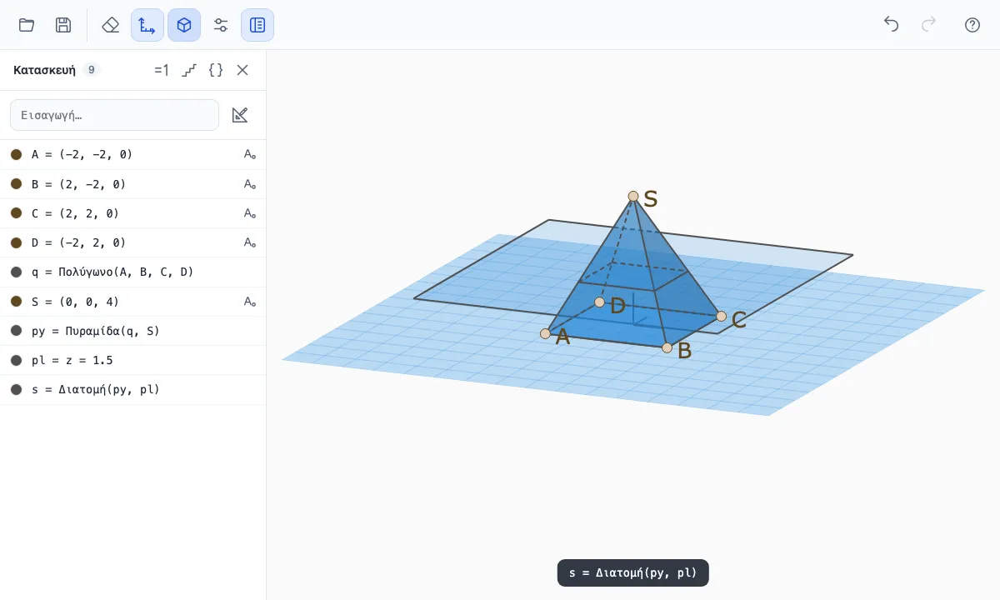

3D

Μετάβαση σε 3D
- Ένα νέο σχήμα είναι επίπεδο. Η Προβολή 3D γέρνει την κάμερα: το επίπεδο του σχήματος γίνεται το δάπεδο z = 0, το σύστημα συντεταγμένων ένα τρίεδρο. Ένα δεύτερο πάτημα επιστρέφει στο επίπεδο, με το προηγούμενο σύστημα συντεταγμένων.
-
Η επιστροφή στο επίπεδο απορρίπτεται όσο ένα αντικείμενο
βγαίνει από το επίπεδο z = 0· η υπόδειξη το
κατονομάζει. Αντίστροφα, ένα επίπεδο σχήμα απορρίπτει κάθε
αντικείμενο του χώρου (
A = (1, 2, 3), σφαίρα…). - Κάθε μετάβαση είναι ένα βήμα αναίρεσης.
- Τα σχήματα 3D του DGPad, με ελεύθερα σημεία στο επίπεδο της οθόνης, δεν έχουν αυτό το κουμπί.
Προβολή
- Περιστροφή: δεξί κουμπί, ή ένα δάχτυλο σε κενό σημείο. Μετακίνηση: αριστερό κουμπί σε κενό σημείο. Ζουμ: ροδέλα.
- P: προοπτική ή παράλληλη προβολή· S: δάπεδο. Οι ίδιες ρυθμίσεις στην καρτέλα Σχήμα.
- Τα κρυμμένα μέρη (ακμές, κύκλοι, ευθείες κάτω από το δάπεδο ή πίσω από μια έδρα) είναι διακεκομμένα.
Κατασκευή
-
Ένα κλικ σε κενό σημείο δημιουργεί σημείο στο δάπεδο· από το
πληκτρολόγιο,
S = (0, 0, 4). - Το μενού αποκτά τις οικογένειες Επίπεδα και Στερεά και δύο κύκλους· ο δακτύλιος ενός σημείου προτείνει τη σφαίρα.
-
Κάθε εργαλείο που περιμένει επίπεδο δέχεται το
δάπεδο: δημιουργείται ένα κρυφό επίπεδο
z = 0, που έπειτα ξαναχρησιμοποιείται. -
Οι τύποι διαβάζουν τις τρεις συντεταγμένες: το
d(A, B)είναι η απόσταση στον χώρο.
| Αντικείμενο | Εντολή |
|---|---|
| Επίπεδο |
Επίπεδο(A, B, C),
Επίπεδο(A, d),
ΠαράλληλοΕπίπεδο(A, p),
ΚάθετοΕπίπεδο(A, d),
p = x + y + z = 3
|
| Κάθετη σε επίπεδο | Κάθετη(A, p) |
| Σφαίρα |
Σφαίρα(O, A),
Σφαίρα(O, r)
|
| Κύκλοι |
Κύκλος(d, P) με άξονα d·
Κύκλος(O, r, d) κάθετος στην ευθεία
d ή παράλληλος προς το επίπεδο d
|
| Στερεά |
Κύλινδρος(A, B, r),
Κώνος(A, B, r),
Κύβος(A, B, C),
Πρίσμα(p, P),
Πυραμίδα(p, S)
|
| Διατομή |
Διατομή(s, p): κύκλος, κωνική ή
πολύγωνο
|
| Ανάπτυγμα |
Ανάπτυγμα(c, f), f από 0 (κλειστό)
έως 1 (επίπεδο)
|
| Τομές |
Τομή(d, p) σημείο,
Τομή(p, q) ευθεία,
Τομή(s, t) κύκλος δύο σφαιρών
|
| Κορυφές | Κορυφή(c, k), k από το 1 |
Στερεά
- Ένα στερεό είναι ένα μόνο αντικείμενο: σχεδιάζει έδρες και ακμές (διακεκομμένες από πίσω) και κρύβει ό,τι βρίσκεται πίσω του. Επιλέγεται στο εσωτερικό του περιγράμματός του.
-
Κύβος με δύο κλικ: δύο σημεία του ίδιου
επιπέδου ή πολυγώνου δίνουν
Κύβος(A, B, p, ±1), από την πλευρά που βλέπει προς την κάμερα· δύο σημεία του ίδιου ύψους δίνουνΚύβος(A, B, 1), από πάνω (−1: από κάτω). Αλλιώς το εργαλείο περιμένει τρίτο σημείο. Ο κύβος γίνεται μη ορισμένος αν το [AB] πάψει να είναι παράλληλο προς το επίπεδο. - Το εργαλείο Διατομή παίρνει το στερεό και το επίπεδο με οποιαδήποτε σειρά.
-
Ένας δρομέας ως δεύτερο όρισμα του
Ανάπτυγμακινεί το ξεδίπλωμα:f = Δρομέας(0, 1, 0),n = Ανάπτυγμα(c, f).